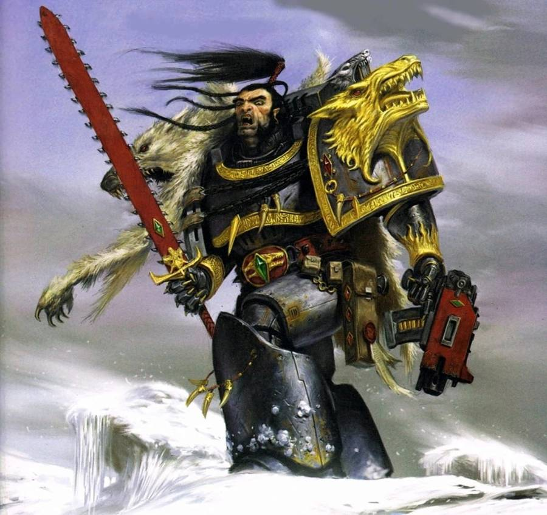

Ragnar Blackmane
| Ragnar Blackmane | |
|---|---|
| Wolf Lord of the Space Wolves | |
 Ragnar after his ascension to the Primaris ranks, in the Era Indomitus Artwork © Games Workshop | |
| Wolf Lord of the Blackmanes | |
| Tenure | 983.M41 – present |
| Predecessor | Berek Thunderfist |
| Successor | Incumbent |
| Master | Logan Grimnar, Great Wolf |
| Born | c. 925–930.M41, Fenris (estimated) |
| Chosen | 941.M41, from the Thunderfist tribe |
| Status | Active; crossed the Rubicon Primaris after Krongar (early M42) |
| Allegiance | Imperium of Mankind |
| Chapter | Space Wolves |
| Homeworld | Fenris |
| Wargear | Frostfang, a frost blade; bolt pistol; Belt of Russ; jump pack in planetstrike |
| Known for | Loss of the Spear of Russ on Garm; the Hunt for the Wulfen (999.M41); beheading Ghazghkull Thraka at Krongar |
Ragnar Blackmane, sometimes called the Black Wolf, is a Wolf Lord of the Space Wolves and the youngest warrior ever to lead one of the Chapter's Great Companies. Born on Fenris and chosen in 941.M41, he rose from the Blood Claws to the Wolf Guard without serving as a Grey Hunter, and became Wolf Lord in 983.M41 after avenging his predecessor, Berek Thunderfist. His Great Company, the Blackmanes, is known for its orbital assaults and its headlong ferocity.[1][2]
His career has not been without disgrace: he cast the Spear of Russ, one of the Chapter's holiest relics, into a Warp portal on the shrine world of Garm, and served a term of exile with the Wolfblade on Terra. In 999.M41 he urged the Chapter to gather the returned Wulfen, and in the Era Indomitus he was mortally wounded at the Battle of Krongar after beheading Ghazghkull Thraka, surviving only by crossing the Rubicon Primaris.[1][3]
Early life
[edit]Ragnar was born to the Thunderfist tribe of Fenris. In 941.M41, during a bloody summer, the Thunderfists were ambushed by the Grimskull tribe after a victory feast, and the young Ragnar fought so well that a Wolf Priest chose him for the Chapter. In 942.M41, during his Trial of Morkai, he was hunted by a great black-maned Fenrisian wolf and killed it, the deed that gave him his name.[1][a]
Blood Claw
[edit]In 949.M41, on the way to the Angelsfall warzone, the strike cruiser Stormdrake was boarded by Drukhari pirates and Ragnar led the counter-attack. In 952.M41 his pack took part in the punitive assault on Henloth.[1]
Garm and the Wolfblade
[edit]On Garm, a shrine world named for Garm, mightiest of Russ's first Wolf Lords, who fell there fighting Magnus the Red, cultists of the Thousand Sons attempted to open a portal through which the daemon primarch could return. Ragnar hurled the Spear of Russ, the relic of the primarch kept on Garm, into the portal and closed it, but the Spear was lost. As punishment, and to protect him from brothers who would not forgive the loss, Logan Grimnar sent him to Terra to serve in the Wolfblade, the honour guard that has protected the Navigator House Belisarius since the Great Crusade. There he helped foil a plot within the Navigator houses and became caught up in a Dark Angels hunt for one of the Fallen.[1][b]
Wolf Guard and Wolf Lord
[edit]In 970.M41 the Bladestar Cluster was overrun by the Blood Axe Orks of Warboss Borzag Khan. Ragnar killed Borzag Khan in single combat and then his retinue one by one, and for it was raised directly to the Wolf Guard. In 983.M41, on the forge world of Bhakhar, his Wolf Lord Berek Thunderfist was slain by the daemon-tainted axe of the Khornate champion Ghorox Bloodfist. Ragnar hunted Ghorox down on the shrine world of Perfidium and killed him, and was made Wolf Lord of Thunderfist's company, which became the Blackmanes. From 984 to 998.M41 he led it through many wars and proved a gifted commander of drop assaults and planetstrikes.[1]
The Hunt for the Wulfen
[edit]In the last days of the 41st millennium the Wulfen of the lost Thirteenth Great Company returned to save the Great Company of Harald Deathwolf at the Battle of Nurades, and were brought to Fenris for judgement. In the debate that followed Ragnar argued that the Wulfen must be gathered and brought home before the Inquisition found them, and the Great Companies set out to do so. Ragnar fought through the daemon-haunted jungles of Dragos to recover a pack, then played a major part in the defence of the Fenris System when the Dark Angels and their allies attacked it in 999.M41.[1]
Era Indomitus
[edit]During the Psychic Awakening the Space Wolves moved against the growing power of Ghazghkull Thraka. The Blackmanes cornered him at the Battle of Krongar, where Ragnar beheaded the warlord but was himself mortally wounded, losing an arm, breaking his neck and suffering many armour-piercing wounds. Too badly hurt even for internment in a Dreadnought, he survived only by crossing the Rubicon Primaris, enduring days of surgery. On his return to duty he learned that Ghazghkull had cheated death again, and in a further attempt to kill him he diverted an orbital station to crash onto Krongar's surface. Ghazghkull survived that too.[3][c]

Character
[edit]Ragnar is fierce, impetuous and loyal, quick to anger and to lead from the front. His warriors follow him with a devotion that other Wolf Lords envy, and his company has a disproportionate number of young Blood Claws, drawn to his example.[2]
Timeline
[edit]| Date | Event |
|---|---|
| 941.M41 | Chosen from the Thunderfist tribe |
| 942.M41 | Trial of Morkai; kills the black-maned wolf |
| 949.M41 | Boarding of the Stormdrake |
| 952.M41 | Henloth |
| Between 942 and 970.M41 | Garm; loss of the Spear of Russ; Wolfblade on Terra |
| 970.M41 | Kills Borzag Khan; made Wolf Guard |
| 983.M41 | Avenges Berek Thunderfist; becomes Wolf Lord |
| 999.M41 | Hunt for the Wulfen; defence of the Fenris System |
| Early M42 (estimated) | Battle of Krongar; crosses the Rubicon Primaris |
See also
[edit]Notes
[edit]- ^ His birth year is estimated from his age at selection; Fenrisian aspirants are chosen as youths.
- ^ The Garm Uprising and Ragnar's Wolfblade service are not dated in surviving sagas; they fall between 942 and 970.M41.
- ^ The Battle of Krongar is dated to the Psychic Awakening, the first decades of M42.
References
[edit]- ^ a b c d e f g Codex Adeptus Astartes - Space Wolves (8th Edition), pg. 31. Games Workshop. King, William. Space Wolf (novel). Black Library.
- ^ a b King, William. Ragnar's Claw (novel). Black Library. King, William. Grey Hunter (novel). Black Library.
- ^ a b King, William. Wolfblade (novel). Black Library. Lightner, Lee. Sons of Fenris (novel). Black Library.